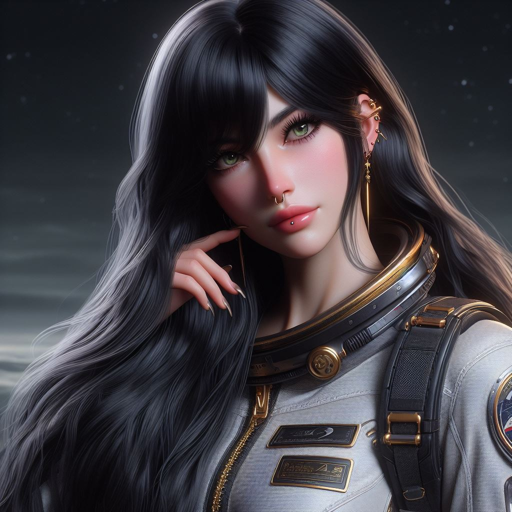
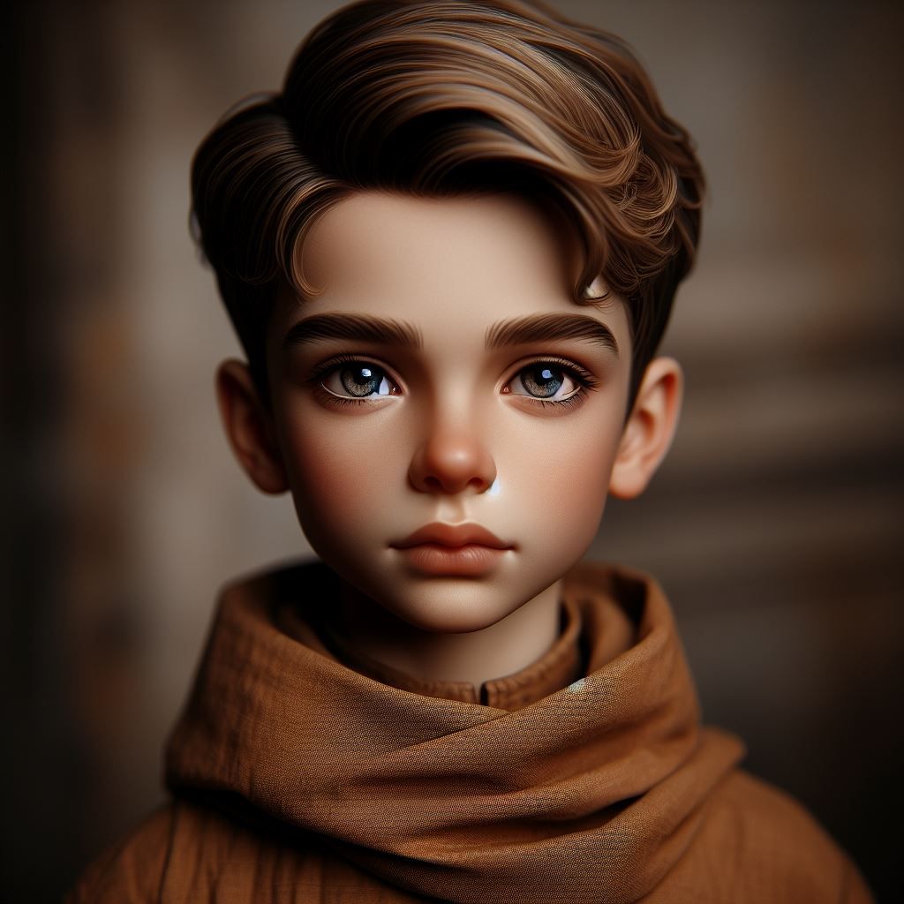

Galactic Odyssey - Part Two: The Trap of Koura

Mateo

Cornellia
Adam

Vendetta

Jindy
In the boundless expanse of space, the red spaceship, now repaired after their previous adventures, soared once more with Mateo, Cornellia, and Adam aboard. Their wanderlust led them on a quest to seek out new life forms, their curiosity fueling their journey through the cosmos.
As they traversed the stars, Adam, ever the mischief-maker, decided to engrave his and Cornellia's initials on the ship's wall as a token of their enduring relationship. But in a twist of fate, his careless actions caused the ship's hull to shatter, plunging them into a state of emergency.
Frantic and disoriented, they scanned the void for any sign of help. It was then that they spotted distant rescue lights flickering in the darkness, beckoning them towards an unknown destination.
Following the lights, they descended upon the mysterious planet of Koura, its sandy dirt and oily waters shimmering beneath the alien sun. Pine trees swayed in the breeze, casting long shadows across the landscape, while yellow fruits with red dots littered the forest floor.
But their arrival was met with treachery, for Koura was not the sanctuary they had hoped for. As they ventured deeper into the heart of the planet, they stumbled upon a trap laid by forces unknown.
Caught in the snare, they found themselves face to face with two new characters: Vendetta, a seductive foreign space mother nurse, and her son Jindy, a precocious philosopher who chronicled their adventures with a feathered quill.
At first glance, Vendetta's allure was undeniable, her gaze captivating even the most steadfast of hearts. But beneath her alluring exterior lay a darkness, a shadow cast by the sinister machinations of those who sought to exploit the planet for their own gain.
Jindy, wise beyond his years, saw through the facade, his keen intellect piercing the veil of deception that shrouded their true intentions. With each stroke of his quill, he chronicled the unfolding drama, capturing the essence of their struggle for posterity.
As the truth began to unravel, Mateo, Cornellia, and Adam realized the extent of the trap they had fallen into. Vendetta and Jindy, though initially portrayed as villains, were in fact pawns in a larger game, bribed by nefarious forces to betray their own kind.
Determined to right the wrongs of the past, the trio rallied together, their relationship stronger than ever before. With courage and determination, they set out to rescue Vendetta and Jindy from the clutches of their captors, risking everything in the process.
But amidst the chaos and danger, temptation reared its head in the most unexpected of ways. As Adam found himself drawn to Vendetta's beguiling charm, he struggled to resist the allure of her seductive presence, his loyalty to Cornellia hanging in the balance.
In a moment of weakness, Adam nearly succumbed to the temptation, his resolve wavering under Vendetta's intoxicating spell. But just as he teetered on the brink of betrayal, Cornellia's unwavering faith in him shone through, her steadfast presence serving as a beacon of light in the darkness.
With renewed determination, Adam shook off the shackles of temptation, his heart and mind clear once more. United in purpose, they fought side by side, overcoming every obstacle in their path until they finally emerged victorious.
In the aftermath of their ordeal, Vendetta and Jindy were freed from their captors' grasp, their eyes opened to the truth of their situation. Impressed by their strength and intelligence, Mateo, Cornellia, and Adam invited them to join their team, knowing that their unique skills would be invaluable in the challenges that lay ahead.
As they bid farewell to the sandy shores of Koura, their bond strengthened by adversity, Mateo, Cornellia, Adam, Vendetta, and Jindy embarked on their next adventure, ready to face whatever challenges awaited them in the boundless expanse of the cosmos. And though temptation may linger on the horizon, their resolve remained unshakeable, forged in the fires of peril and tested by the trials of fate.